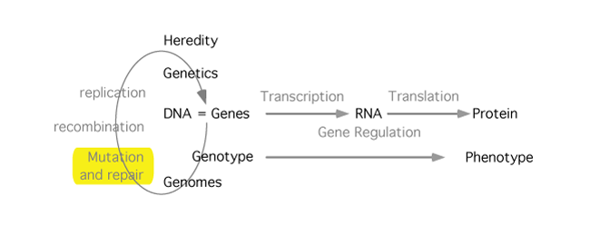

DNA Damage and Repair

If the genome is the 'instruction manual' for building and operating the organism, then one can reasonably ask, how does it guard against damage - cosmic 'typos'? Actually it is estimated that the rate of random damage is 10,000 hits per cell per day. So all organisms are able to sense and repair damaged DNA. Sometimes the mistakes are not found, sometimes the repairs are wrong. Of those 10,000, on average one to them will not be fixed, leading to a mutation. So think about the difference between the use of information in the instruction manual for a living thing vs, say, the source code for building a computer program, or the blueprints of a space shuttle. We are remarkably resistant to errors.
Learning resources
- Study Guide
- Narration: Part 1
- Narration: Part 2
- Visuals
- Summary movie [not available on this site]
10/10/21